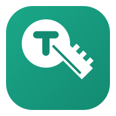

TurnkeyCreate professional quotes, manage jobs, send invoices, and organise your entire operation from one simple platform.
Used by pressure washing, cleaning and other service businesses to run quotes, jobs and invoicing end to end — no spreadsheets, no chasing paper quotes.
Sign in to your CRM